3 Meta-analysis over effect-sizes and model parameters
3.1 Basic model structures for meta-analysis
The meta function is a random-effect model and the structure is given as \[\{\beta_{i}, ..., \beta_{n}\}= \beta_{\text{pooled}} + u_i\] It has the option of placing a single or multiple random effect as a vector or matrix using the argument ‘random’ the structure then becomes then \[\{\beta_{i}, ..., \beta_{n}\} = \beta_{\text{pooled}} + u_i +r_i\] Similar, it has the option of placing a single or multiple moderators as a vector or matrix using the argument ‘moderator’ the structure then becomes then \[\{\beta_{i}, ..., \beta_{n}\} = \beta_{\text{pooled}} + u_i +m_i\]
for a single random effect. It can adjust for the relation between the \(se\) and model parameters using the the squared standard error \(se^2\) often refered to as Precision-Effect Estimate with Standard Errors or short PEESE (method=1, Stanley and Doucouliagos, 2014). The structure is then \[\{\beta_{i}, ..., \beta_{n}\} = \beta_{\text{pooled}} + u_i + \alpha_{i} \cdot se^2\] or inverse of the sample size \(1/n\) (method=2, the latter option is performed below) with the structure \[\{\beta_{i}, ..., \beta_{n}\} = \beta_{\text{pooled}} + u_i + \alpha_{i} \cdot \left(\frac{1}{n}\right)\] Of course if bias is considered neglect non can be performed (method=0). I still would like to include a third 4th option to utilize Robust Bayesian Model Averaging (RoBMA: Maier et al. 2023). But this sometimes adjust extremely when including \(se^2\) and therefore I left this option open for now.
3.2 Meta-analysis on standardized effect sizes
3.2.1 The meta-function
Meta-analysis is often performed using standardized effect sizes (SES). While I do not endorse this practice, I believe it offers limited benefits for field ecology, applied ecology, and the generalization of real-world ecological relations (Baguley, 2009; Tukey, 1969). Therefore, I will provide a brief introduction to meta-analysis and demonstrate how bias correction methods perform. To illustrate this, I will compare the results with those obtained using my preferred metafor package in R.
#First run and check standard output for metafor
library(metafor)
data("example1")
#Run metafor
standard_metafor <- metafor::rma(yi=example1$est, sei=example1$se)
#Run EcoPostView
standard_meta <- meta(estimate=example1$est, stderr=example1$se)## Call:
## meta(estimate = example1$est, stderr = example1$se)
##
## Summary:
## parameter predictor link group map mu se ll
## 1 b1 none-specified identity none-specified -0.2284 -0.228 0.0208 -0.2616
## ul I2 n
## 1 -0.1934 0.3547 83##
## Random-Effects Model (k = 83; tau^2 estimator: REML)
##
## tau^2 (estimated amount of total heterogeneity): 0.0182 (SE = 0.0049)
## tau (square root of estimated tau^2 value): 0.1350
## I^2 (total heterogeneity / total variability): 65.66%
## H^2 (total variability / sampling variability): 2.91
##
## Test for Heterogeneity:
## Q(df = 82) = 250.8709, p-val < .0001
##
## Model Results:
##
## estimate se zval pval ci.lb ci.ub
## -0.2283 0.0199 -11.4886 <.0001 -0.2673 -0.1894 ***
##
## ---
## Signif. codes: 0 '***' 0.001 '**' 0.01 '*' 0.05 '.' 0.1 ' ' 1## Name parameter predictor link group map mu se
## 1 Main b1 none-specified identity none-specified -0.2284 -0.228 0.0208
## ll ul I2 n
## 1 -0.2616 -0.1934 0.3547 83Both the metafor and EcoPostView packages yield similar means (-0.22) and standard errors. This suggests that, in many cases, not specifying priors may be uninformative.
3.2.2 Check for bias
We can further assess the models performance by examining the bias through the residuals.
par(mfrow=c(1,2))
plot(1/example1$se, resid(standard_metafor),
xlab = "1/se", ylab="Residuals", main="metafor")
abline(a=0, b=0, col="red", lty=2)
plot(1/example1$se, standard_meta$Residuals,
xlab = "1/se", ylab="Posterior mean residuals", main="EcoPostView")
abline(a=0, b=0, col="red", lty=2)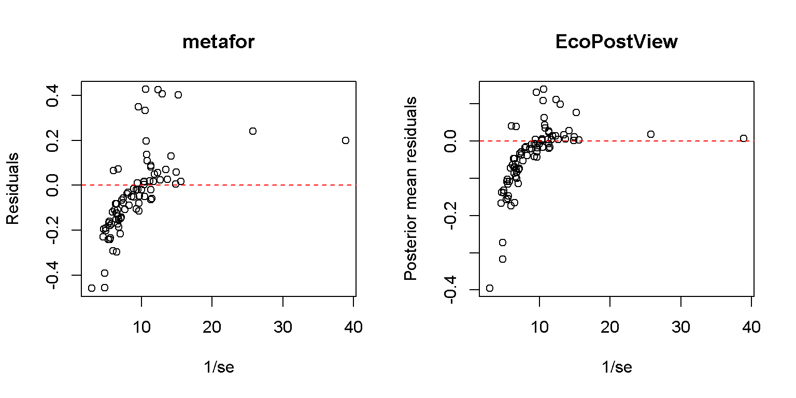
Both functions reveal a clear diagonal pattern, which is nearly identical in both cases. However, the posterior means are pulled closer to the overall mean (a phenomenon known as shrinkage) for estimates with weaker standard errors. This bias can also be assessed using the rescheck function from EcoPostView
#Use the residual check function within EcoPostView
res_bias <- rescheck(standard_meta)
print(res_bias$bias_se)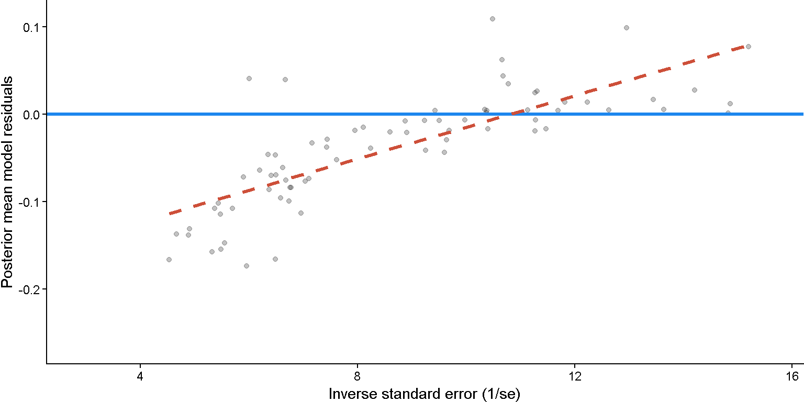
This bias is clearly a result of excluding or selectively retaining ‘significant’ results, often through practices such as manually dropping ‘non-significant’ variables or using stepwise model selection methods like forward/backward AIC or BIC (Gelman & Loken, 2013). These practices can lead to a significant overestimation of the parameter (or ‘effect size’).
3.2.3 Bias adjustment
This bias can be corrected using Method 1 presented by Stanley and Doucouliagos (2014).
#Run EcoPostView (increased the chain thinning interval and number of iterations to improve mixing)
adjusted_meta <- meta(estimate=example1$est, stderr=example1$se, method = 1,
n_thin = 5,
n_iter = 30000)## Call:
## meta(estimate = example1$est, stderr = example1$se, method = 1,
## n_thin = 5, n_iter = 30000)
##
## Summary:
## parameter predictor link group map mu se ll
## 1 b1 none-specified identity none-specified -0.0694 -0.0723 0.026 -0.1139
## ul I2 n
## 1 -0.0284 0.1989 83## Name parameter predictor link group map mu
## 1 Main b1 none-specified identity none-specified -0.06940 -0.07230
## 2 Adjust b1 none-specified identity none-specified -10.51066 -10.53237
## se ll ul I2 n
## 1 0.026000 -0.11390 -0.028400 0.1989 83
## 2 1.508297 -12.99075 -8.012118 NA NA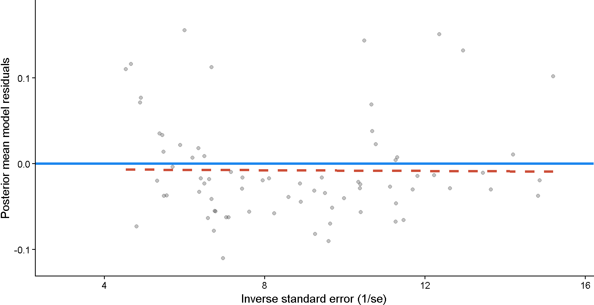
In the method outlined above, the bias has been adjusted (not removed), resulting in a much lower pooled estimate. This adjustment allows for a clearer assessment of the relationship between the standard errors by examining the residuals. While this is commonly done using funnel plots, it can also be done by directly checking the residuals.
However, the adjustment should only be applied when clear patterns of bias are present, as it can lead to over-corrections even when no bias is evident. That said, it is highly effective when a bias is present in the data. In the future, I aim to incorporate additional methods to better assess the strength of any bias.
3.2.4 Exploring the bias pattern
The bias displayed in this example is extreme, and in such cases, it may be beneficial to further explore the nature of the bias to determine if a ‘publication gap’ exists. This gap can be highlighted by examining the z-distribution derived from the p-value. Normally, the p-value is derived from the z-value, but when a clear gap is visible (as observed in Zwet & Cator, 2021), we should be able to model the absolute z-value as a mixture of two half-normal distributions - one truncated at 0 and the other at 1.96. Since the likelihood of such a mixture is challenging to estimate, I employ an Approximate Bayesian Computation (ABC) algorithm based on rejection sampling (ABC-rejection). This method is further described in Csilléry et al. (2010) and Hartig et al. (2011), and the model is formally presented in the theoretical section.
#From the dataset calculate the p-value from the effect-sizes and standard errors
pvalues <- ptoz(estimate=example1$est, stderr=example1$se)
#run the ABC-rejection model
result_abc <- abctoz(p=pvalues$data$p, nsim = 250000)
#Extract the information from the results based on a selected threshold
extract_abc <- extrabc(result_abc, xpos = 4, dist_threshold = 0.052)## Statistic Mean SE ll ul
## 1 c 0.7850 0.0883 0.6009 0.8948
## 2 mu(z) 1.3291 0.4762 0.4392 1.9698
## 3 sd(z) 0.9273 0.1912 0.6599 1.3093#Plot the histogram of the z-values with the simulated density lines of the posterior
plot(extract_abc$hist)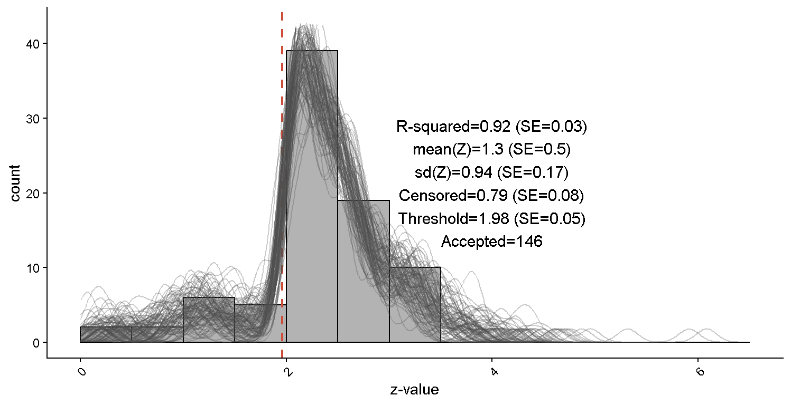
Based on the distribution of z-values, we can clearly observe that values where |z|>1.96 are more frequently published than those with lower absolute values. If no publication gap existed this would be reason to believe the data could serve as decent evidence against a null model in the frequentist framework. However, the sharp boundary at |z| > 1.96 suggests a selection bias. Furthermore, the z-values can be reasonably modeled, and the model appears to fit the data well, with an R-squared 0.92. From a heuristic perspective an R-squared above 0.6–0.7 can be considered acceptable. Additionally, the density curves align well with the histogram, further supporting the model’s fit.
The proportion of observations explained by the censored component of the model is 0.76 (76%). This does not imply that 76% of the data is censored, but rather that the model’s censored component captures a substantial portion of the observed pattern. The goal here is to determine whether the model provides a good fit to the data under the assumption of selective reporting. If the residuals suggest severe bias, this model fit offers additional information of a selection process at play.
To ensure the robustness of the results, one should verify that the model fit remains adequate and that the number of accepted simulations is sufficient (typically > 100).
3.2.5 Including a moderator
Inclusion of a moderator is possible as well. The estimated parameter of the relation between the moderator and the effect-sizes is given in the summary output.
#Run EcoPostView with moderator
standard_meta <- meta(estimate=example1$est, stderr=example1$se, moderator=example1$mod)## Call:
## meta(estimate = example1$est, stderr = example1$se, moderator = example1$mod)
##
## Summary:
## parameter predictor link group map mu se ll
## 1 b1 none-specified identity none-specified -0.1752 -0.1777 0.0217 -0.2132
## ul I2 n
## 1 -0.1425 0.288 83## Name parameter predictor link group map mu
## 1 Main b1 none-specified identity none-specified -0.1752000 -0.1777000
## 2 Moderator b1 none-specified identity none-specified 0.8635058 0.8920398
## se ll ul I2 n
## 1 0.0217000 -0.2132000 -0.142500 0.288 83
## 2 0.2142984 0.5360524 1.242018 NA NA3.3 Meta-analysis on (Generalized) Linear Models (G)LMs
3.3.1 Data and models
The information required for a meta-analytic approach can often be extracted from figures, tables, datasets, or combinations of these sources. However, such information is rarely used in a consistent or standardized way. Put simply, multiple datasets are needed on which (G)LMs can be fitted (see Kaijser et al., 2025). This process often reveals that ecological data is noisy, potentially biased, and exhibits considerable heterogeneity across studies.
These challenges pose difficulties for drawing causal inferences or controlling statistical error. Both error control and causal conclusions require controlled environments, well-designed experiments, and the identification or modeling of confounding variables. While it may not be possible to impose such controls retrospectively (i.e., a posteriori), the existing information is still highly valuable.
This data can be used to make probabilistic statements, generate predictions, and estimate the a priori power required to design future studies that do focus on error control or causal inference. The purpose of this package is to enable such posterior analysis—allowing users to generalize ecological effects from the literature, visualize emerging patterns, and make informed predictions.
3.3.2 (G)LMs and extracting data
To use this package effectively, data is required, and (G)LMs need to be fitted to that data. This (meta-)data can be obtained from figures (e.g., using tools like WebPlotDigitizer), tables (e.g., by converting PDFs to Excel files), datasets, or combinations of these sources (see Kaijser et al., 2025).
The so-called “effects” we refer to are, more precisely, model parameters, commonly known as the intercept and slope - typically denoted as (b0 or β0) and (b1 or β1). These parameters define the equation:
response variable = b0 + b1 · predictor variable
This package is built on the underlying philosophy that if we accept a reported parameter (e.g., (b1) to represent an “effect” of the predictor, then such an effect should ideally be generalizable. For instance, the relationship between chlorophyll-a and total phosphorus is widely considered generalizable across aquatic systems.
From here on, the term model parameter will be used instead of “effect.” By collecting estimates of (b0) and (b1) from various studies, we can build a pooled model that predicts responses for one or more new values (xi or \(x_i\)). This approach allows us to understand the magnitude of the relationship, assess its variability, and make informed predictions.
In the context of Generalized Linear Models (GLMs), the response variable is linked to the linear predictor through a link function, commonly denoted as g(…).For example, when using the identity link function, no transformation is applied. In this case, the expected value of y - written as E(y) or (E(y|x)) - is directly related to the linear component, just as in a standard LM. \[g(E(y_{i} \mid x_{i})) = \beta_0 + \beta_1 \cdot x_{i}\] However, in a GLM with, log- or logit-link it is easier to talk about log-linear relations \[log(E(y_{i} \mid x_{i})) = \beta_0 + \beta_1 \cdot x_{i}\] or logit-linear relations \[logit(E(y_{i} \mid x_{i})) = \beta_0 + \beta_1 \cdot x_{i}\] In a Generalized Linear Model (GLM), the slope is not a “true” slope in the geometric sense, since the relationship between the response variable (y) and predictor variable (x) is no longer a straight line. However, the model is still considered linear because the parameters are incorporated linearly in the linear predictor. As such, the terms coefficient or regression coefficient typically refer to these model parameters, denoted as (\(\beta\)).
In practice, I often prefer to work with elasticity or semi-elasticity coefficients (Wooldridge, 2001), which can offer an interpretable measures in log-linear or logit-linear models. That said, their use is context-dependent and may not always be appropriate. The elasticity coefficient quantifies the percentage change in \(y\) associated with a 1% change in \(x\). For example, an elasticity of 0.2 implies a 0.2% increase in \(y\) for every 1% increase in \(x\). In a log-log model: \(y\) given 1% in \(x\). Hence, for a log-linear model \(log(E(y \mid x)) = \beta_0 + \beta_1 \cdot log(x)\) and thus \(\beta_1 = \frac{\log(y)}{\log(x)}\). For the semi-elasticity coefficient (i.e., logit-linear) this only accounts partially and values closer 0 are better interpretable because \(logit(E(y \mid x)) = \beta_0 + \beta_1 \cdot log(x)\) and thus \(\beta_1 = \frac{logit(y)}{\log(x)}\). This expressed the change in the log-odds per 1% elasticity
(Cramer, 1991; Wooldridge, 2001). These coefficients allow comparison across models and predictors while maintaining interpretable units for prediction. Since \(x\) is log-transformed, its original units are preserved — unlike in standardized coefficients, where this interpretability is lost.
As an example, consider a decline in benthic invertebrate species richness from 100 to 30 as conductivity increases from 50 till 5000 \(\mu S·cm^-1\) The elasticity is: \[\beta_{elasticity}= (log(100)-log(30))/(log(50)-log(5000))=-0.26\]. This decrease is the same for a decline from 10 till 3 over the same range \[\beta_{elasticity}=(log(10)-log(3))/(log(50)-log(5000))=-0.26\] Although the model’s intercept \(\beta_0\)would differ, this does not affect the interpretation of the regression coefficient \(\beta_1\), nor its uncertainty or visualization.
I use the ‘unofficial expressions’ for b0 and b1, due to the reference in the R-package to The expression from the models above would be more more formally expressed: \[g(E(y_{i} \mid x_{ij})) = \sum_{j=1}^{j} \beta_j \cdot x_{ij}\] Where \(x_{ij}\) refers to the \(j\) the predictor variable (e.g., salinity is \(j\)=1 and light is \(j\)=2) and \(i\) is the \(i\)-th observation. This expression will later be utilized in the explanation of the visualization.
3.3.3 The meta-function
At this stage, we assume that multiple (G)LMs have been fitted. From these models, the parameter estimates and their standard errors have been extracted and compiled into a dataset. For each estimate, it is useful to record relevant metadata including the source (e.g., DOI), the type of predictor variable (e.g., conductivity), group of the response type (e.g., benthic-invertebrates), link-function and if the model parameters is the intercept b0 or a regression coefficient b1. When models include multiple predictor variables, all corresponding regression coefficients are denoted as b1, distinguishing them from the intercept b0. The example below in R demonstrates the expected structure of this data frame.
## # A tibble: 6 × 9
## doi link group predictor parameter est se n mean
## <chr> <chr> <chr> <chr> <chr> <dbl> <dbl> <dbl> <dbl>
## 1 10.1127/1863-9135/2007… log Inve… Salinity b1 0.0697 0.202 10 870.
## 2 10.1127/1863-9135/2007… log Inve… Oxygen b1 0.319 0.196 10 8.15
## 3 10.1127/1863-9135/2007… log Inve… Sediment b1 0.258 0.164 10 0.385
## 4 10.1127/1863-9135/2007… logit Inve… Salinity b1 -0.950 0.723 10 870.
## 5 10.1127/1863-9135/2007… logit Inve… Oxygen b1 -0.136 0.353 10 8.15
## 6 10.1127/1863-9135/2007… logit Inve… Sediment b1 0.266 0.309 10 0.385In the example above, the est column contains the estimated model parameters, while the se column holds the standard error of those estimates. The group column can represent an organism group, specific species, or taxon (or any other category you wish to use for grouping). The predictor column denotes the specific predictor variable, and the parameter column indicates whether the estimate corresponds to the intercept (b0) or a regression coefficient (b1). The link column specifies the link function used in the model. Additionally, it is recommended to include the sample size (n) in your dataset to adjust for ‘small-sample effects’ if needed (Peters et al., 2006; Moreno et al., 2009).
The meta-function can be applied over the example data via the following argument.
mod1 <- meta(estimate=example2$est, #Model estimate
stderr=example2$se, #Standard error of the model estimate
parameter=example2$parameter, #Model parameter (b0 or b1)
predictor=example2$predictor, #Predictor variable (independent variable)
link_function=example2$link, #Link function
grouping=example2$group, #Group
Nsamp=example2$n, #Sample size (optional, for adjustment 2=Peters (1/n)),
method=2) #Adjustment method (0=none, 1=Egger's (1/se), 2=Peters (1/n))## Call:
## meta(estimate = example2$est, stderr = example2$se, parameter = example2$parameter,
## predictor = example2$predictor, link_function = example2$link,
## grouping = example2$group, method = 2, Nsamp = example2$n)
##
## Summary:
## parameter predictor link group map mu se ll ul
## 1 b1 Oxygen log Fish 0.3557 0.3807 0.1261 0.1926 0.5970
## 2 b1 Oxygen log Invertebrates 0.1638 0.1724 0.0868 0.0288 0.3130
## 3 b1 Oxygen logit Fish -0.0426 -0.1120 0.4501 -0.8386 0.6122
## 4 b1 Oxygen logit Invertebrates -0.0260 -0.0280 0.1504 -0.2746 0.2110
## 5 b1 Salinity log Fish -0.0416 -0.0330 0.0620 -0.1353 0.0660
## 6 b1 Salinity log Invertebrates -0.1066 -0.1070 0.0252 -0.1472 -0.0640
## 7 b1 Salinity logit Fish -0.2888 -0.2606 0.4178 -0.9380 0.4095
## 8 b1 Salinity logit Invertebrates -0.2940 -0.2971 0.0974 -0.4536 -0.1371
## 9 b1 Sediment log Fish 0.0386 0.0260 0.1595 -0.1965 0.2725
## 10 b1 Sediment log Invertebrates -0.0543 -0.0554 0.0156 -0.0811 -0.0300
## 11 b1 Sediment logit Fish -0.4024 -0.3693 0.7729 -1.4273 0.7016
## 12 b1 Sediment logit Invertebrates -0.1862 -0.1938 0.0853 -0.3371 -0.0573
## I2 n
## 1 0.5946 27
## 2 0.5387 59
## 3 0.2483 14
## 4 0.8256 38
## 5 0.4857 29
## 6 0.4842 83
## 7 0.5386 13
## 8 0.3801 52
## 9 0.6642 9
## 10 0.8739 46
## 11 0.6372 6
## 12 0.0137 26The meta-function can return a warning that the MCMC-chains are not properly mixing. This can be an issue due to various reasons. Where this warning originates from can be assessed by looking at the ‘raw’ JAGS model output (mod1$model$JAGS_model). This could show that a parameter of interested ‘mu[.]’ Has a a large Rhat or small effective sample size. Most of these issues can be resolved by thinning the chains, increasing the number of chains or setting more informed or stronger priors. Moreover, if the issue is not an issue of the estimated ‘mu’ parameter, it could be decided to ignore it. These choices are ultimately up to the user. An option to prevent warnings would be to set the warning level for Eff_warn lower i.e., Eff_warn = 500.
The meta-function may return a warning indicating that the MCMC chains are not mixing properly. This issue can arise for various reasons. To diagnose the source of the warning, examine the raw JAGS model output (mod1$model$JAGS_model). Specifically, look for cases where a parameter of interest, such as mu[.], has a large Rhat value or a small effective sample size.
Most of these issues can be addressed by thinning the chains, increasing the number of chains, or specifying more informed or stronger priors. If the problem is not related to the mu parameter, you may choose to disregard the warning. Ultimately, the decision on how to address these issues lies with the user.
To prevent the warning from being raised, you can lower the threshold for the Eff_warn parameter (e.g., Eff_warn = 500).
3.3.3.1 Setting priors
A key advantage of the Bayesian approach is the ability to incorporate prior information, thereby explicitly shifting the posterior estimates toward more plausible values for the pooled model parameter. To define a single prior for each relation and parameter, a specific structure is required. By default, model parameters are assumed to follow a normal (Gaussian) distribution with a mean (\(\mu\), prior_mu) of 0 and a standard deviation (\(\sigma\), prior_mu_se) of 0.5. At present, the prior distribution for model parameters is limited to the normal distribution. The prior for the residual standard deviation (\(\sigma\)) is defined as a uniform distribution, with the upper bound (prior_sigma_max) set to 5 by default.
As discussed in Section, I often prefer to work heuristically with elasticity or semi-elasticity coefficients. However, this is not required, and the choice of prior should reflect your modeling preferences and domain knowledge. In fact, failing to think carefully about the priors — even when even limited prior information is available — means the analysis is not truly Bayesian in nature.
Users can specify their own prior values for both the mean and standard deviation. To obtain a structured overview of the required prior inputs, set get_prior_only = TRUE. This will return a data frame containing a level column, as well as columns for the prior mean (\(\mu\)) and standard deviation (\(se\)). These values can then be tailored to the specific context of the analysis using available prior information. Details on how to incorporate this prior data frame into your model are provided later.
only_priors <- meta(estimate=example2$est,
stderr=example2$se,
parameter=example2$parameter,
predictor=example2$predictor,
link_function=example2$link,
grouping=example2$group,
Nsamp=example2$n,
method=2,
get_prior_only=TRUE) #Only show the structure of the priors
print(only_priors)## Levels Prior_mu Prior_se
## 1 b0_NA_log_Fish 0 10
## 2 b0_NA_log_Invertebrates 0 10
## 3 b0_NA_logit_Fish 0 10
## 4 b0_NA_logit_Invertebrates 0 10
## 5 b1_Oxygen_log_Fish 0 10
## 6 b1_Oxygen_log_Invertebrates 0 10
## 7 b1_Oxygen_logit_Fish 0 10
## 8 b1_Oxygen_logit_Invertebrates 0 10
## 9 b1_Salinity_log_Fish 0 10
## 10 b1_Salinity_log_Invertebrates 0 10
## 11 b1_Salinity_logit_Fish 0 10
## 12 b1_Salinity_logit_Invertebrates 0 10
## 13 b1_Sediment_log_Fish 0 10
## 14 b1_Sediment_log_Invertebrates 0 10
## 15 b1_Sediment_logit_Fish 0 10
## 16 b1_Sediment_logit_Invertebrates 0 103.3.3.2 Setting multiple priors for bayesian model averaging
An important advantage of the Bayesian framework is the ability to incorporate multiple prior distributions (\(k\)), enabling Bayesian Model Averaging (BMA; Hoeting et al., 1999; Hinne et al., 2020). This approach allows one to represent multiple plausible scenarios that could have explained the observed data, and to average over these competing models based on their relative credibility.
To implement BMA, a dataset similar in structure to the single-prior setup is required, but extended to include multiple prior specifications. Each prior distribution typically includes a mean (\(\mu\)) and standard error (\(se\)), just as before.
In many cases, prior weights are assigned to reflect how strongly each prior contributes to the model. These weights range between 0 and 1 and ideally sum to 1 (or 100%). For simplicity, especially when no strong preference among priors exists, equal weighting can be used (e.g., with three priors, each receives a weight of 1/3). Alternatively, when the weights themselves are uncertain, they can be treated as random variables and modeled using a Dirichlet distribution: \(weight \sim Dir(\alpha_i)\) where \(\alpha_i = 1\) for each prior (\(i\)), yielding a uniform Dirichlet distribution.
In the example below, I illustrate this approach using priors with varying values of \(\mu\) and \(se\). For intercept parameters, a broader prior such as \(N(\mu = 0, se = 10)\) is often reasonable, reflecting higher uncertainty.
## # A tibble: 705 × 9
## doi link group predictor parameter est se n mean
## <chr> <chr> <chr> <chr> <chr> <dbl> <dbl> <dbl> <dbl>
## 1 10.1127/1863-9135/200… log Inve… Salinity b1 0.0697 0.202 10 8.70e+2
## 2 10.1127/1863-9135/200… log Inve… Oxygen b1 0.319 0.196 10 8.15e+0
## 3 10.1127/1863-9135/200… log Inve… Sediment b1 0.258 0.164 10 3.85e-1
## 4 10.1127/1863-9135/200… logit Inve… Salinity b1 -0.950 0.723 10 8.70e+2
## 5 10.1127/1863-9135/200… logit Inve… Oxygen b1 -0.136 0.353 10 8.15e+0
## 6 10.1127/1863-9135/200… logit Inve… Sediment b1 0.266 0.309 10 3.85e-1
## 7 10.2307/1468008 log Inve… Sediment b1 -0.254 0.109 94 9.47e-2
## 8 10.1007/s10530-020-02… logit Inve… Salinity b1 0.825 0.204 27 2.87e+2
## 9 10.1007/s10530-020-02… log Fish Salinity b1 -0.151 0.143 25 2.86e+2
## 10 10.1007/s10661-021-09… log Inve… Oxygen b1 -0.370 0.391 10 2.71e+0
## # ℹ 695 more rowsmod2 <- meta(estimate=example2$est,
stderr=example2$se,
parameter=example2$parameter,
predictor=example2$predictor,
link_function=example2$link,
grouping=example2$group,
prior_mu=example3[c(2,4,6)], #prior for the mean
prior_mu_se=example3[c(3,5,7)], #prior for the standard error of the mean
Nsamp=example2$n,
method=2,
n_thin=10, #thinning the chains
n_chain=4) #changing the number of chains from 2 to 4## Call:
## meta(estimate = example2$est, stderr = example2$se, parameter = example2$parameter,
## predictor = example2$predictor, link_function = example2$link,
## grouping = example2$group, method = 2, Nsamp = example2$n,
## prior_mu = example3[c(2, 4, 6)], prior_mu_se = example3[c(3,
## 5, 7)], n_chain = 4, n_thin = 10)
##
## Summary:
## parameter predictor link group map mu se ll ul
## 1 b1 Oxygen log Fish 0.3698 0.3610 0.1020 0.2123 0.5413
## 2 b1 Oxygen log Invertebrates 0.2106 0.1955 0.0808 0.0581 0.3244
## 3 b1 Oxygen logit Fish 0.1947 0.1428 0.2582 -0.2921 0.5397
## 4 b1 Oxygen logit Invertebrates 0.1031 0.0659 0.1446 -0.1821 0.2900
## 5 b1 Salinity log Fish -0.0641 -0.0566 0.0561 -0.1469 0.0343
## 6 b1 Salinity log Invertebrates -0.0996 -0.1111 0.0253 -0.1528 -0.0702
## 7 b1 Salinity logit Fish -0.2809 -0.2739 0.2121 -0.6257 0.0459
## 8 b1 Salinity logit Invertebrates -0.2980 -0.2965 0.0839 -0.4405 -0.1663
## 9 b1 Sediment log Fish -0.0074 -0.0518 0.1545 -0.3078 0.1923
## 10 b1 Sediment log Invertebrates -0.0576 -0.0573 0.0153 -0.0820 -0.0327
## 11 b1 Sediment logit Fish -0.3453 -0.3322 0.1970 -0.5954 -0.0102
## 12 b1 Sediment logit Invertebrates -0.2082 -0.2121 0.0766 -0.3381 -0.0891
## I2 n
## 1 0.6028 27
## 2 0.5369 59
## 3 0.2458 14
## 4 0.8238 38
## 5 0.4431 29
## 6 0.4882 83
## 7 0.5471 13
## 8 0.3878 52
## 9 0.6634 9
## 10 0.8735 46
## 11 0.6356 6
## 12 0.0136 26## Name parameter predictor link group map mu
## 1 Main b1 Oxygen log Fish 3.698000e-01 3.610000e-01
## 2 Main b1 Oxygen log Invertebrates 2.106000e-01 1.955000e-01
## 3 Main b1 Oxygen logit Fish 1.947000e-01 1.428000e-01
## 4 Main b1 Oxygen logit Invertebrates 1.031000e-01 6.590000e-02
## 5 Main b1 Salinity log Fish -6.410000e-02 -5.660000e-02
## 6 Main b1 Salinity log Invertebrates -9.960000e-02 -1.111000e-01
## 7 Main b1 Salinity logit Fish -2.809000e-01 -2.739000e-01
## 8 Main b1 Salinity logit Invertebrates -2.980000e-01 -2.965000e-01
## 9 Main b1 Sediment log Fish -7.400000e-03 -5.180000e-02
## 10 Main b1 Sediment log Invertebrates -5.760000e-02 -5.730000e-02
## 11 Main b1 Sediment logit Fish -3.453000e-01 -3.322000e-01
## 12 Main b1 Sediment logit Invertebrates -2.082000e-01 -2.121000e-01
## 13 Adjust b0 NA log Fish -6.120751e-05 -5.049816e-05
## 14 Adjust b1 Oxygen log Fish -4.545043e-05 -4.292610e-05
## 15 Adjust b1 Salinity log Fish -3.184721e-05 -3.961420e-05
## 16 Adjust b1 Sediment log Fish -2.890093e-05 -1.756773e-05
## 17 Adjust b0 NA logit Fish 2.554162e-04 1.014232e-04
## 18 Adjust b1 Oxygen logit Fish -2.906712e-04 -2.898048e-04
## 19 Adjust b1 Salinity logit Fish 4.184295e-05 6.020527e-05
## 20 Adjust b1 Sediment logit Fish 2.340762e-05 1.078121e-05
## 21 Adjust b0 NA log Invertebrates -5.162794e-09 -4.636612e-09
## 22 Adjust b1 Oxygen log Invertebrates 4.121223e-07 6.939978e-07
## 23 Adjust b1 Salinity log Invertebrates -1.043099e-09 -1.910217e-09
## 24 Adjust b1 Sediment log Invertebrates -3.234645e-09 -2.363583e-08
## 25 Adjust b0 NA logit Invertebrates -8.791533e-06 -7.381380e-06
## 26 Adjust b1 Oxygen logit Invertebrates 1.748922e-05 2.400798e-05
## 27 Adjust b1 Salinity logit Invertebrates -1.360757e-05 -1.349878e-05
## 28 Adjust b1 Sediment logit Invertebrates -6.877308e-07 -1.084199e-06
## se ll ul I2 n
## 1 1.020000e-01 2.123000e-01 5.413000e-01 0.6028 27
## 2 8.080000e-02 5.810000e-02 3.244000e-01 0.5369 59
## 3 2.582000e-01 -2.921000e-01 5.397000e-01 0.2458 14
## 4 1.446000e-01 -1.821000e-01 2.900000e-01 0.8238 38
## 5 5.610000e-02 -1.469000e-01 3.430000e-02 0.4431 29
## 6 2.530000e-02 -1.528000e-01 -7.020000e-02 0.4882 83
## 7 2.121000e-01 -6.257000e-01 4.590000e-02 0.5471 13
## 8 8.390000e-02 -4.405000e-01 -1.663000e-01 0.3878 52
## 9 1.545000e-01 -3.078000e-01 1.923000e-01 0.6634 9
## 10 1.530000e-02 -8.200000e-02 -3.270000e-02 0.8735 46
## 11 1.970000e-01 -5.954000e-01 -1.020000e-02 0.6356 6
## 12 7.660000e-02 -3.381000e-01 -8.910000e-02 0.0136 26
## 13 4.489834e-05 -1.203744e-04 2.727360e-05 NA NA
## 14 2.679763e-05 -8.085535e-05 -2.718707e-06 NA NA
## 15 3.692278e-05 -9.902969e-05 1.704633e-05 NA NA
## 16 9.433115e-05 -1.562492e-04 1.272917e-04 NA NA
## 17 1.582480e-03 -2.625168e-03 2.508370e-03 NA NA
## 18 3.180378e-04 -8.030058e-04 2.238411e-04 NA NA
## 19 1.723075e-04 -2.215068e-04 3.390696e-04 NA NA
## 20 1.798415e-04 -2.373723e-04 2.472533e-04 NA NA
## 21 3.417499e-08 -6.165422e-08 5.054532e-08 NA NA
## 22 6.728751e-06 -9.884331e-06 1.169747e-05 NA NA
## 23 3.269146e-09 -7.283268e-09 3.307761e-09 NA NA
## 24 1.506438e-07 -2.555707e-07 2.280150e-07 NA NA
## 25 5.193565e-05 -9.305337e-05 7.498626e-05 NA NA
## 26 4.418991e-05 -4.986264e-05 9.380495e-05 NA NA
## 27 2.788848e-05 -5.933548e-05 3.159790e-05 NA NA
## 28 5.410157e-06 -9.891587e-06 7.853420e-06 NA NAThe results of the meta-analysis are summarized in a table that includes the Maximum A Posteriori (MAP) estimates, the posterior mean (\(\mu\)), standard error (\(se\)), and the High Density Interval (HDI), which by default is set to 90%. Additionally, the heterogeneity among studies is quantified using the \(I^2\) statistic.
The prior for the between-study variance (\(\tau^2\)) is, by default, specified as a uniform distribution ranging from 0 to 5. This choice has the benefit of producing wider intervals, which can be conservative—particularly useful when dealing with smaller sample sizes. However, this conservatism can also be a drawback in cases where more precision is desired.
To offer users flexibility, the argument prior_var_fam can be set to "exp" to use an exponential distribution instead of the default "unif" (uniform distribution). When using"unif", the variance prior is specified as \(Unif(0, \text{prior_study_var})\). When “exp” is selected, the prior variance becomes \(Exponential(\frac{1}{\text{prior_study_var})}\)
In general, for complex meta-analyses with many predictors and responses (e.g., Kaijser et al. 2025), the uniform prior is recommended, provided that convergence is achieved. In contrast, for more focused analyses with fewer predictors and responses - and particularly with small datasets (e.g., \(n < 10\)) — an exponential prior (e.g., with a mean of 1000) may be more appropriate.
These recommendations are heuristic — they are grounded in practical experience and prior applications, but should not be treated as universally optimal. Users are strongly encouraged to conduct sensitivity analyses to assess how prior assumptions influence the results.
3.3.4 rescheck-function and bias
After analyzing the meta-data, it is essential to check for bias, which can arise from multiple sources. This check should ideally be part of a sensitivity analysis, employing various methods such as: Display of the z-distribution, Egger’s test, Peters tests and/or funnel plots. Bias is nearly always present to some extent, but its magnitude may vary depending on the dataset.
A straightforward first step is to visually assess the relationship between the residuals and the inverse of the standard error (\(1/se\)). If sample sizes are available, one can also assess the relationship with \(1/n\).
If a clear diagonal pattern between \(\beta\) to \(1/se\) can indicate the selection larger effects with broader intervals, p-hacking, HARKing, data dredging, noise in the data, etc. A relation with \(1/n\) often occurs when small sample sizes an noise result in so called ‘small-study-effects’.
The residuals can be assessed across the total dataset, per group or per predictor.
Below the residuals per group in relation to \(1/se\).
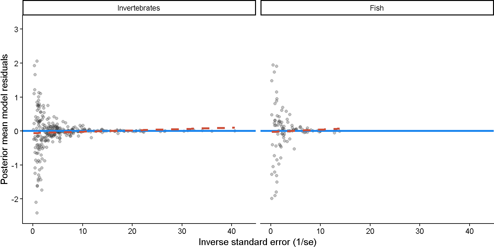
And the residuals per predictor in relation to \(1/se\).
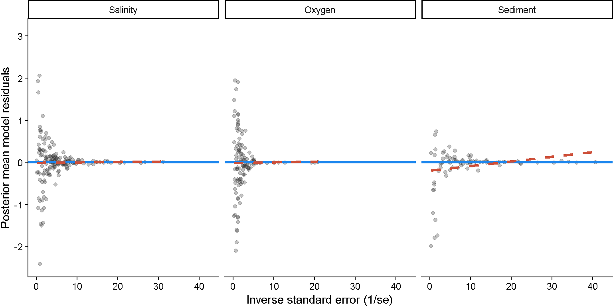
The dotted red line should approximately overlay the solid blue line, which represents the expected relationship with an intercept and slope of 0. However, small sample sizes can substantially influence the slope of the red line, potentially leading to misleading inferences. When clear bias is detected, it is advisable to either apply a bias correction method or specify stronger priors to mitigate the consequences.
3.3.5 senscheck-function and prior sensitivity
Sensitivity checks play an important role in assessing the robustness of model results. For simpler models with highly informative data, these checks may not always be necessary. However, one cannot assume that identical results would be obtained in a subsequent study under different conditions. Consequently, drawing strong conclusions based solely on whether an interval includes zero is arbitrary and often misleading.
A more informative approach involves directly inspecting the posterior distribution, along with the estimate, its uncertainty, and a visualization of the variance in patterns revealed by the data. This is particularly important in ecology, where data tend to be noisy and often exploratory in nature—meaning the posterior distribution can vary substantially between studies. Still, sensitivity checks can serve as a useful reality check.
In this framework, a sensitivity check evaluates the difference between a fully specified model with informed priors (mod1) and a baseline model with vague or weak priors (mod0). This comparison is made by computing the posterior odds ratio: \(Log(P(Mod1|Data, Info)/P(Mod0|Data, Info))\) assuming that all other model hyper parameters are held constant except for the priors.
An alternative approach is to assess the extent to which prior information in mod1 versus mod0 contributes to a shift in the posterior away from zero: \(Log(P(Mod1>0|Data, Info)/P(Mod0>0|Data, Info))\) This can be transformed into a probability between 0 and 1, where 0.5 indicates no net influence of the prior on the posterior, 0 indicates complete negative influence, and 1 complete positive influence. However, I am not the biggest fan of this way of assessing sensitivity, as this again treats the posterior as a form of dichotomous hypothesis test.
In the earlier example, mod2 was treated as mod1. A corresponding weakly informed mod0 model can be created by setting all prior means (\(\mu\)) to 0 and their standard errors (\(se\)) to 100.
#Create a model with minimal prior information
mod0 <- meta(estimate=example2$est,
stderr=example2$se,
parameter=example2$parameter,
predictor=example2$predictor,
link_function=example2$link,
grouping=example2$group,
prior_mu=0, #prior for the mean
prior_mu_se=100, #prior for the standard error of the mean
Nsamp=example2$n,
method=2,
n_thin=10,
n_chain=4)## Call:
## meta(estimate = example2$est, stderr = example2$se, parameter = example2$parameter,
## predictor = example2$predictor, link_function = example2$link,
## grouping = example2$group, method = 2, Nsamp = example2$n,
## prior_mu = 0, prior_mu_se = 100, n_chain = 4, n_thin = 10)
##
## Summary:
## parameter predictor link group map mu se ll ul
## 1 b1 Oxygen log Fish 0.4171 0.3833 0.1263 0.1790 0.5777
## 2 b1 Oxygen log Invertebrates 0.1464 0.1725 0.0886 0.0309 0.3206
## 3 b1 Oxygen logit Fish -0.0505 -0.1010 0.4439 -0.8484 0.5856
## 4 b1 Oxygen logit Invertebrates -0.0356 -0.0262 0.1482 -0.2752 0.2058
## 5 b1 Salinity log Fish -0.0495 -0.0339 0.0620 -0.1273 0.0750
## 6 b1 Salinity log Invertebrates -0.1033 -0.1073 0.0253 -0.1486 -0.0660
## 7 b1 Salinity logit Fish -0.2513 -0.2791 0.4253 -0.9539 0.4306
## 8 b1 Salinity logit Invertebrates -0.3019 -0.2979 0.0967 -0.4538 -0.1373
## 9 b1 Sediment log Fish 0.0148 0.0280 0.1701 -0.2011 0.2826
## 10 b1 Sediment log Invertebrates -0.0580 -0.0557 0.0156 -0.0792 -0.0283
## 11 b1 Sediment logit Fish -0.4460 -0.3460 0.8229 -1.5186 0.6766
## 12 b1 Sediment logit Invertebrates -0.1842 -0.1923 0.0847 -0.3367 -0.0613
## I2 n
## 1 0.5826 27
## 2 0.5381 59
## 3 0.2504 14
## 4 0.8238 38
## 5 0.4898 29
## 6 0.4870 83
## 7 0.5268 13
## 8 0.3698 52
## 9 0.6637 9
## 10 0.8737 46
## 11 0.6366 6
## 12 0.0139 26#Perform the sensitivity check
sens_check <- senscheck(mod2, mod0)
#Plot the posterior odds
print(sens_check$posterior_odds)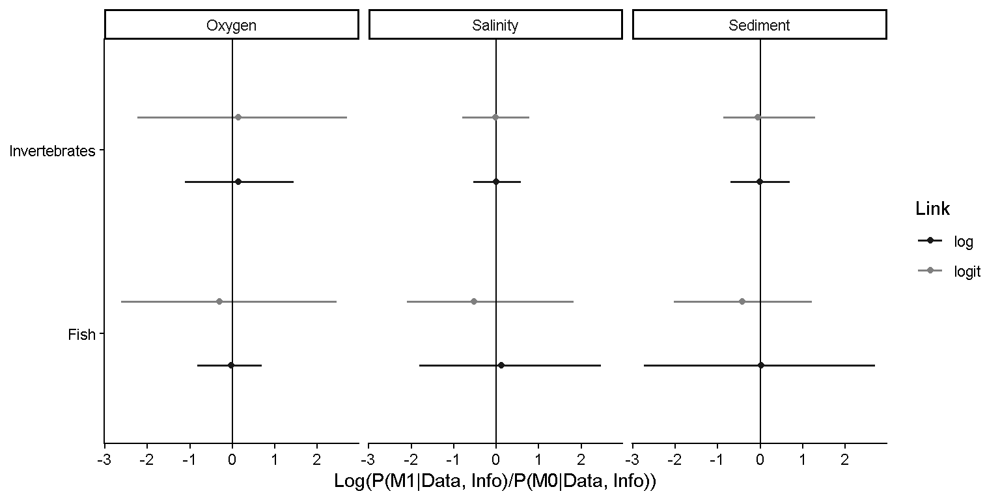
The vertical black line in the plot represents the threshold where there is no difference between the models, i.e., where: \(0=Log(P(Mod1|Data, Info)/P(Mod0|Data, Info))\) This corresponds to equal support for both mod1 and mod0. Notably, the results show that for log-linear models, the fish–oxygen relationship, and for logit-linear models, the salinity–sediment relationship, the inclusion of prior information in mod1 shifts the posterior distributions toward more negative values.
To quantify the strength and direction of this shift, the inverse logit of the Maximum A Posteriori (MAP) value can be taken: To quantify the strength and direction of this shift, the inverse logit of the Maximum A Posteriori (MAP) value can be taken: \(logit^{-1}(MAP)\) This transformation expresses the shift as a probability where smaller then 0.5 indicates negative shift, bigger than 0.5 a positive shift and 0.5 none.
#Select only predictor and link function
inv_df <- sens_check$table[c(3:4)]
#Calculate the probability
inv_df$prob <-plogis(sens_check$table$mu[sens_check$table$group=="Fish"])
#Print the table
print(inv_df)## predictor link prob
## 1 NA log 0.5026234
## 2 NA log 0.4534880
## 3 NA logit 0.4889556
## 4 NA logit 0.4563614
## 5 Oxygen log 0.5463033
## 6 Oxygen log 0.4494655
## 7 Oxygen logit 0.5468678
## 8 Oxygen logit 0.4151167
## 9 Salinity log 0.5026234
## 10 Salinity log 0.4534880
## 11 Salinity logit 0.4889556
## 12 Salinity logit 0.4563614
## 13 Sediment log 0.5463033
## 14 Sediment log 0.4494655
## 15 Sediment logit 0.5468678
## 16 Sediment logit 0.4151167The table shows that for sediment in a logit-linear model related to fish, the posterior probability shifts from 0.38 in mod0 to 0.50 in mod1. This corresponds to a 12% increase, i.e., 0.50−0.38=0.12. This indicates that prior information contributes additional support for a negative relationship between fine sediment and lotic fish species — an relation is not fully supported by the data alone.
This is not a limitation but rather reflects what occurs in practice: prior information often drawn from empirical studies or domain expertise tends to be more directional. This highlights the value of incorporating prior information from the literature when building and refining Bayesian models.
Admittedly, this is the most demanding phase of the workflow: gathering and extracting data, fitting multiple (G)LMs, defining and implementing priors, assessing potential biases, and optimizing the model to ensure stable and interpretable results. Once complete, presenting the results or making predictions from the fitted models is considerably more straightforward.
Additionally, overlaying the probability density distribution of both models. Gives another way to asses the influence of the priors. It shows posterior density of both mod1 (M1) and mod0 (M0).
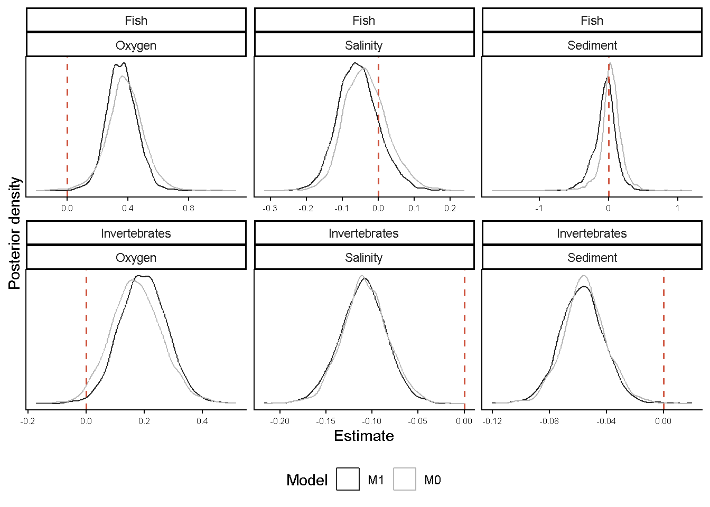
3.3.6 pdplot-function
To visualize posterior results, a common approach is to display point estimates along with credible intervals. However, this method imposes sharp boundaries on a continuous distribution of uncertainty, which may not fully reflect the nature of a posterior probability distribution.
An alternative—and often more informative—approach is to plot the Posterior Density Distribution (PDD). This plot combines the point estimate, interval range, and the full shape of the posterior, offering a richer picture of the uncertainty and possible parameter values.
The PDD represents the distribution of the pooled parameter estimate conditional on the meta-data and prior information: \(f(\beta_{\text{pooled}} \mid Meta-data, Info)\). This is conceptually the inverse of the likelihood, which tells us how likely the observed data are given a set of parameter values: \(f(Meta-data \mid \{\beta_{i}, ..., \beta_{n}\})\). In practice, this visualization can be generated using the pdplot() function, which overlays the posterior density curve with interval and point estimates, allowing for intuitive interpretation of the central tendency and uncertainty of the pooled estimate.
## Warning: Removed 1 row containing missing values or values outside the scale range
## (`geom_vline()`).
## Removed 1 row containing missing values or values outside the scale range
## (`geom_vline()`).
## Removed 1 row containing missing values or values outside the scale range
## (`geom_vline()`).The object contains the figures generated for both the log
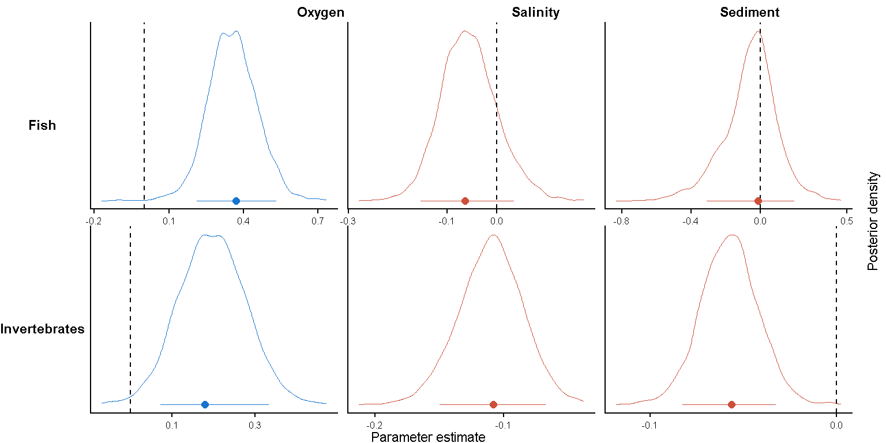
and logit functions.
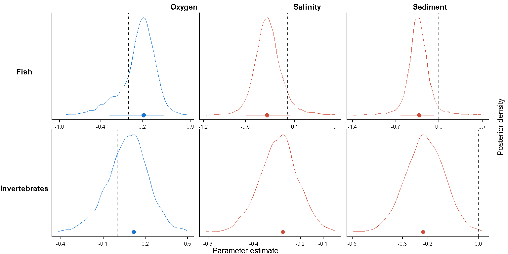
And, a summary belonging to the figures.
## map mu se ll ul
## 1 0.3698 0.3610 0.1020 0.2123 0.5413
## 2 0.1947 0.1428 0.2582 -0.2921 0.5397
## 3 -0.0641 -0.0566 0.0561 -0.1469 0.0343
## 4 -0.2809 -0.2739 0.2121 -0.6257 0.0459
## 5 -0.0074 -0.0518 0.1545 -0.3078 0.1923
## 6 -0.3453 -0.3322 0.1970 -0.5954 -0.0102
## 7 0.2106 0.1955 0.0808 0.0581 0.3244
## 8 0.1031 0.0659 0.1446 -0.1821 0.2900
## 9 -0.0996 -0.1111 0.0253 -0.1528 -0.0702
## 10 -0.2980 -0.2965 0.0839 -0.4405 -0.1663
## 11 -0.0576 -0.0573 0.0153 -0.0820 -0.0327
## 12 -0.2082 -0.2121 0.0766 -0.3381 -0.0891For larger datasets with multiple groups and predictor variables, it may be useful to adjust the order of the Posterior Density Distributions (PDDs) for better clarity and comparison. You can control the ordering of predictors and groups by using the arguments order_predictor and order_group. These arguments expect a character vector containing the names of the predictors or groups in the desired order.
By adjusting these arguments, you can organize the PDDs in a way that facilitates easier interpretation, especially when working with complex models involving numerous predictors and groupings.
3.3.7 forest-function
A classical way to display the results of a meta-analysis is through a forest plot. These plots show the effect sizes of individual studies along with the pooled effect size. To ensure transparency, the prior distribution should also be included in the forest plot.
It is also possible to perform a formal model comparison using the Bayes Factor, which quantifies the evidence for one model over another. In the example below, regression coefficients for both fish and invertebrates are analyzed. The focus here is on displaying the logit-linear model relating invertebrate evenness to salinity.
We are interested in whether the observed parameters (effect sizes) across studies are more likely under model M1 (e.g., a model assuming a relationship) than under model M0 (a null or weak-effect model). To reflect no prior preference between models, we set fixed_prior = TRUE, which assigns equal prior probabilities to each model. This approach also generalizes to comparisons involving more than two models.
Note that, even when multiple priors are included, only the Bayes Factor comparing prior 1 to prior 2 is displayed in the figure.
The Bayes Factor comparing models 1 and 2 is given by:
\[ BayesFactor_{12}=\frac{P(Data|M1)}{P(Data|M2)}\cdot\frac{P(M1)}{P(M2)}=\frac{P(Data|M1)}{P(Data|M2)}\cdot\frac{0.5}{0.5}=\frac{P(Data|M1)}{P(Data|M2)} \]
In the example below, we focus solely on the model parameter for the logit-linear relationship between salinity and invertebrate evenness. The specific prior model M1 assumes a negative relationship, while M2 assumes no relationship or only an ecologically negligible one. Note that formal model comparison is not always necessary. It is entirely reasonable to interpret model parameters or effect sizes in terms of their ecological relevance. Not all statistical modeling needs to serve as a hypothesis test.
#Select only salinity from the dataset for invertebrates, logit-link and parameter b1
salinity_df <- example2[example2$predictor %in% "Salinity" & example2$group %in% "Invertebrates" & example2$link %in% "logit" & example2$parameter %in% "b1",]
#Get only the priors
priors <- meta(estimate=salinity_df$est,
stderr=salinity_df$se,
parameter=salinity_df$parameter,
predictor=salinity_df$predictor,
link_function=salinity_df$link,
grouping=salinity_df$group,
get_prior_only = T)
#Display the priors (default prior are broad)
print(priors)## Levels Prior_mu Prior_se
## 1 b1_Salinity_logit_Invertebrates 0 10#Generate the alternative model first M1 (H1), because I want to know how more probable the data is generated
#under H1 than H0 as P(Data|M1)/P(Data|M0)
priors$Prior_mu <- -0.3
priors$Prior_se <- 0.15
#Generate the null model second M2 or (H0)
priors$Prior_mu2 <- 0
priors$Prior_se2 <- 0.025
print(priors)## Levels Prior_mu Prior_se Prior_mu2 Prior_se2
## 1 b1_Salinity_logit_Invertebrates -0.3 0.15 0 0.025mod3 <- meta(estimate=salinity_df$est,
stderr=salinity_df$se,
parameter=salinity_df$parameter,
predictor=salinity_df$predictor,
link_function=salinity_df$link,
grouping=salinity_df$group,
prior_mu=priors[c(2,4)],
prior_mu_se=priors[c(3,5)],
fixed_prior = T, #Set the prior weights (odds) so each hypothesis gets 50% equal probability.
Nsamp=salinity_df$n,
method=2,
n_thin=10,
n_chain=4) ## Warning in meta(estimate = salinity_df$est, stderr = salinity_df$se, parameter =
## salinity_df$parameter, : The Rhat or/and effective sample size for some >1.01 or/and
## <1000. Chains might not be mixing.## Call:
## meta(estimate = salinity_df$est, stderr = salinity_df$se, parameter = salinity_df$parameter,
## predictor = salinity_df$predictor, link_function = salinity_df$link,
## grouping = salinity_df$group, method = 2, Nsamp = salinity_df$n,
## prior_mu = priors[c(2, 4)], prior_mu_se = priors[c(3, 5)],
## fixed_prior = T, n_chain = 4, n_thin = 10)
##
## Summary:
## parameter predictor link group map mu se ll ul
## 1 b1 Salinity logit Invertebrates -0.2778 -0.2936 0.0874 -0.4353 -0.1556
## I2 n
## 1 0.2854 52#Generate a figure is more groups are included more plots are generated in order of "mod$summary"
fig <- forestplot(mod3, xlimit = c(-2.5, 1.5))## Warning: Removed 2 rows containing missing values or values outside the scale range
## (`geom_point()`).## Warning: Removed 1 row containing missing values or values outside the scale range
## (`geom_segment()`).#Display the most aesthetically appealing figure without adjusting the x-axis
print(fig$figures[[1]])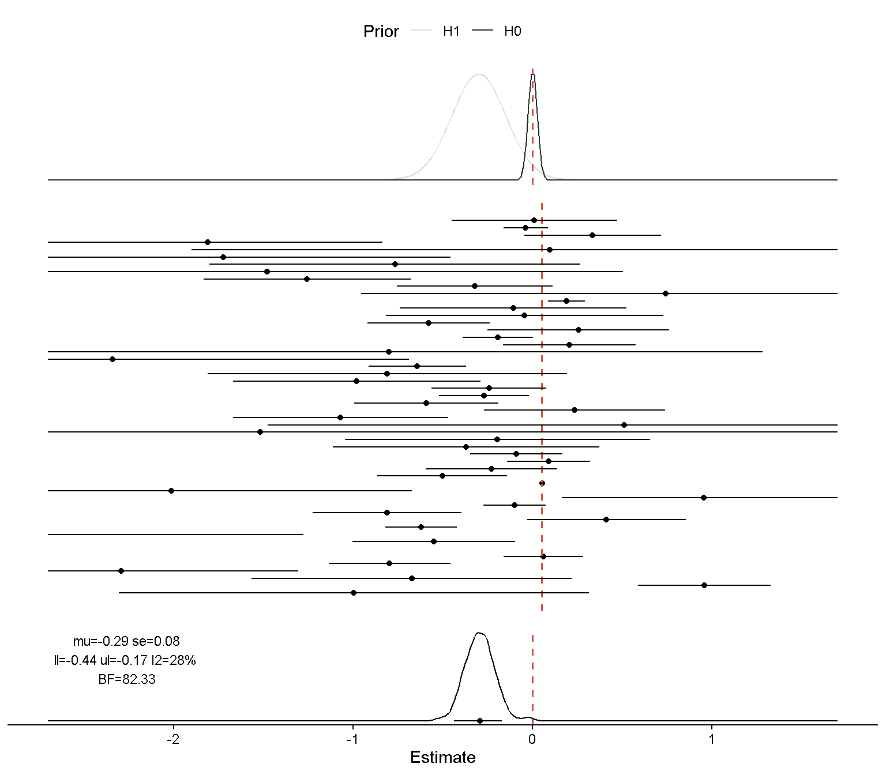
3.3.8 hop-function (Hypothetical Outcome Plots)
Hypothetical Outcome Plots (HOPs) are a valuable tool for visualizing how the expected value of a response variable might change in response to variations in a predictor variable, while keeping all other variables constant (Kale et al., 2019).
In a HOP, each line represents the marginal change in the expected value of the response variable as the predictor variable changes. This allows for a clear understanding of how the relationship between the predictor and response behaves, without the influence of other variables.
\[ g(E(y_{i} \mid x_{ij)})) = \beta_{pooled,j=0,m} + \beta_{pooled,j=1,m} \cdot x_{i,j=1}+ \sum_{j=1}^{j} \beta_{pooled,j} \cdot \hat{x}_{j} \]
The hypothetical prediction is generated using the posterior estimates, denoted as \(f(\beta_{pooled}|Data, Info)\). This parameter reflects the influence of a one-unit change in the predictor on the response variable.
To display this change, a set of sequential values for the predictor \(x_{i,j=1}\) can be generated where \(x_{i,j=1}=\{i, ..., n\}\) represents realistic values for the observed gradient of the predictor. The function \(f(\beta_{pooled,j}|Data, Info)\) provides the most plausible values for the pooled regression coefficients \(\beta_{pooled,j}\). By drawing a sample \(m\) from this distribution, \(\beta_{pooled,j,m}\sim f(\beta_{pooled,j}|Data, Info)\) and repeating this process multiple times, a range of hypothetical outcomes can be generated.
For this process, all other parameters are held constant at their estimated values, \(\sum_{j=1}^{j} \beta_{pooled,j}\), while the predictor \(x_j\) is varied. Therefore, the HOP lines represent simulations of possible marginal changes in the response from the posterior distribution.
A slight difference from classical HOPs is that, in the case of meta-analysis, \(\hat{x}=1\) is assumed. This approach still illustrates the marginal change in \(y_i\) given a change in \(x_{i,j}\) , but only under the condition where all other predictors are set to their estimated values \(\hat{x}_j=1\).
\[ g(E(y_{i} \mid x_{ij)})) = \beta_{pooled,j=0,m} + \beta_{pooled,j=1,m} \cdot x_{i,j=1}+ \sum_{j=1}^{j} \beta_{pooled,j} \cdot 1 \]
Note that the function operates under the assumption of log-transformed variables. This implies that the xlim argument, which defines the limits of the x-axis in the plot, is given in log-transformed units. For example, for the fraction of fine sediment, the log-transformation of the limits is exp(−4.6)=0.01 and exp(0)=1. These values correspond to the range of the fraction of fine sediment on a logarithmic scale.
The y-axis, on the other hand, is presented on the response scale, meaning that the values are not transformed, and they represent the actual predicted responses (e.g., taxonomic richness in this case).
In the future, I plan to implement an argument that allows users to set the xlim on the response scale directly, without needing to manually convert to log-transformed values.
Below is an example of the outcomes showing the response of invertebrate taxonomic richness along the gradient of fine sediment.
log_sal1 <- hop(mod2, #Object from the meta function
group="Invertebrates", #Select group to out of Invertebrates and Fish
predictor = "Sediment", #Select group to out of Salinity and Oxygen
xlab= "Fine sediment (%)", #Give x-axis a name
link_function = "log", #Which link function out of log and logit
ylab="Invertebrate taxonomic richness", #Give y-axis a name
xlim=c(-4.6, 0), #Give y-axis a name
ylim=c(0, 45), #Set limits y-axis
hop_lwd = 0.3) #Set width of the hop lines
#Display the HOPs
print(log_sal1)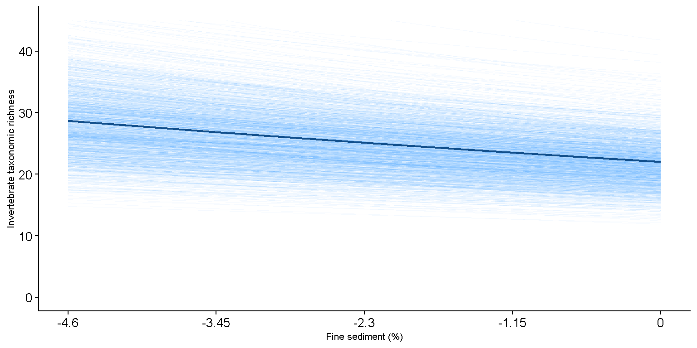
It is also possible to scale the x-axis to display the exponentiated values using the argument exp_axis. This option will transform the values on the x-axis back from their log-transformed scale to their original scale, providing a more intuitive representation of the predictor variable.
Additionally, you may notice that the intercept could appear unusually high. This might be due to the fact that the intercept represents the average intercept across all studies, with all other variables held constant at a value of 1. If you wish to adjust the position of the intercept, you can use the shift_b0 argument. This allows you to shift the intercept value for a more accurate representation based on the specific context of your analysis.
log_sal2 <- hop(mod2,
group="Invertebrates",
predictor = "Sediment",
xlab="Fine sediment (%)",
link_function = "log",
ylab="Invertebrate taxonomic richness",
xlim=c(-4.6, 0),
ylim=c(0, 20),
hop_lwd = 0.3,
exp_axis = T, #Exponentiate the x-axis notations
round_x_axis = 2, #Round the notation to full integers
shift_b0 = -1) #Shift the intercept by -1
#Display the HOPs
print(log_sal2)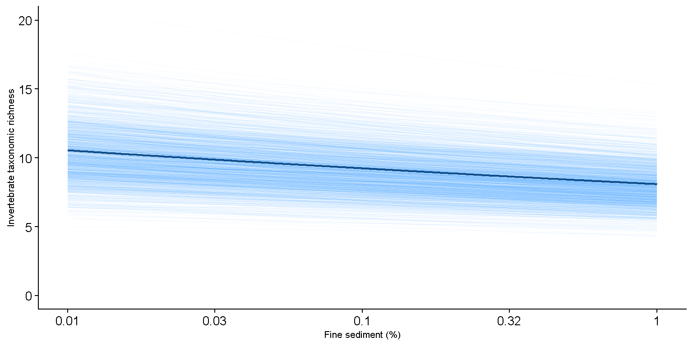
3.3.9 hop function (and Partial Dependency Plots)
When multiple predictors are included in the dataset, it is possible to visualize the effect of a change in one predictor while holding the other predictors constant. This can be achieved by creating Partial Dependency Plots (PDPs), which show how the predicted response variable changes as a particular predictor varies, keeping other predictors fixed.
The Partial Dependency Plot is a powerful tool for understanding the marginal effect of each predictor on the response variable. In the context of a meta-analysis, it helps illustrate how the relationship between a specific predictor and the response is shaped by the collective data from multiple studies, while controlling for the influence of other variables.
log_sal3 <- hop(mod2,
group="Invertebrates",
predictor = c("Sediment", "Oxygen"), #Select both Sediment and Oxygen
xlab= "Fine sediment fraction", #Give x-axis a name
ylab= expression(Oxygen ~ mg ~ L^-1), #Give y-axis a name
gradient_title = "MAP Invertebrate \ntaxonomic richness",#Give the y-axis gradient a name
pdp_resolution = 100, #Set resolution of the grid
link_function = "log",
exp_axis = T,
round_x_axis = 2,
round_y_axis = 0,
xlim=c(-4.61, -0.92),
ylim=c(1.61, 2.77))
#Display the PDP
print(log_sal3)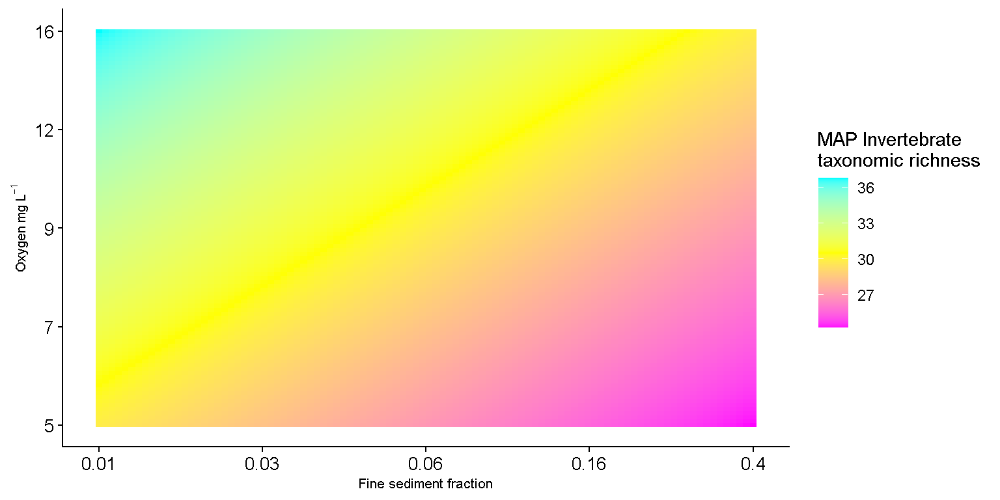